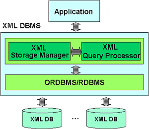

|
|
오디세우스/XML은 XML 문서를 저장하고 관리하는 XML DBMS로서 객체관계형 및 관계형
DBMS를 기반 시스템으로 사용하며, oid, set, list 등을 지원하는 객체관계형 DBMS에서
최적의 성능을 발휘한다. 오디세우스/XML은 데이터베이스를 접근하기 위한 표준
응용 프로그램 인터페이스인 ODBC API를 사용하므로 오디세우스 객체관계형 DBMS 뿐
만 아니라 Oracle, Microsoft SQL Server, IBM DB2와 같은 다양한 상용 관계형 DBMS에서
도 사용이 가능하다. 추가로, XML DBMS를 위한 SOAP dispatcher도 구현되어있다.
오디세우스/XML은 Microsoft 사의 Windows 운영체제와 Sun
Microsystems 사의 Solaris 운영체제를 지원하며 C++ 언어를 사용하여 개발되었다.
오디세우스/XML은
총 52,000 line의 C++코드로 구성되어있다.
 기술이전사례: LG전자, 2006
기술이전사례: LG전자, 2006

성능이 검증된 오디세우스 ORDBMS를 기반 엔진으로 활용
 빠른 질의 처리 기능 빠른 질의 처리 기능
무한대에 가까운 대용량 데이터베이스 지원
우수한 동시성 제어 기능 및 파손 회복 기능 지원
표준 XML 질의 언어인 XQuery 지원 (국내 최초 개발)
XML 질의 최적화 기술 탑재 (예: Nested query normalization)
정보 검색에 필수적인 전문 검색 (full-text search) 지원
Oracle, Microsoft SQL Server, IBM DB2 등 상용 관계형 DBMS와도 연동 가능
오디세우스/XML은 라이브러리 형태로 제공되며 사용자는 이를 이용하여
다양한 응용 프로그램을 개발할 수 있다. 응용 프로그램 개발자는 오디세우스/XML이 제공하는 C언어 사용자
인터페이스 (API)를 사용하여 응용 프로그램을 작성한 후, 오디세우스/XML 라이브러리와 링크하면 응용
프로그램을 완성할 수 있다. 오디세우스/XML이 지원하는 운영체제와 컴파일러는 다음과 같다.
지원 운영 체제 및 컴파일러
Solaris 2.5 이상, Sun C 4.0 이상
Windows 98/2000/XP/NT, Microsoft Visual C 5.0 이상
XML 데이터의 저장 및 관리가 필요한 모든 응용들 |